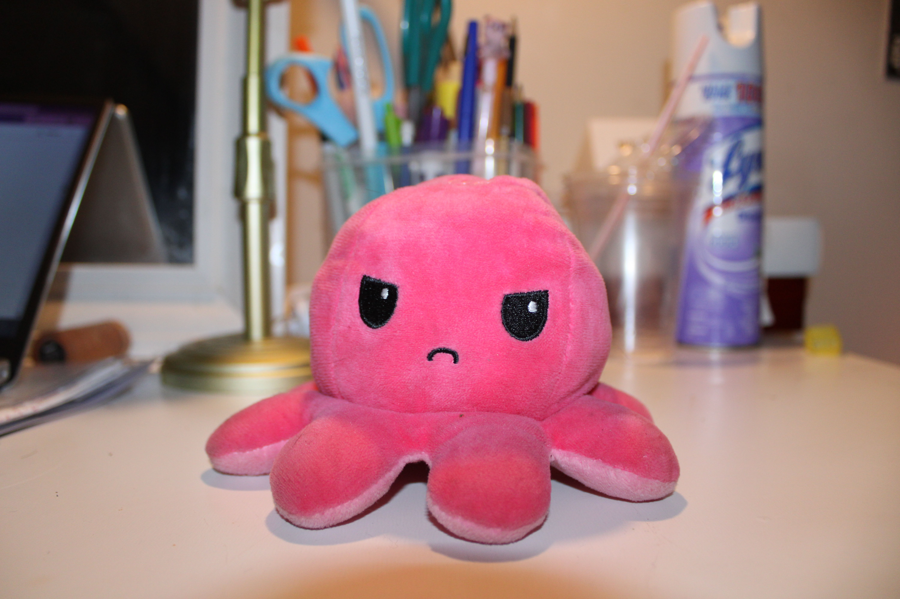
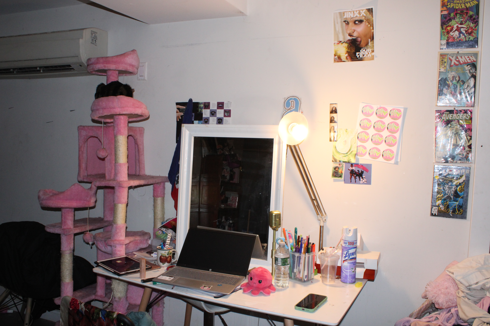

This page shows one shallow depth of field image and one deep depth of field image.


For this assignment, I experimented with depth of field by adjusting my camera settings. In the shallow depth of field image, the subject is clearly separated from the background, which draws attention to it. In the deep depth of field image, more of the environment is visible and in focus. This helped me understand how aperture and focus affect storytelling in photography.